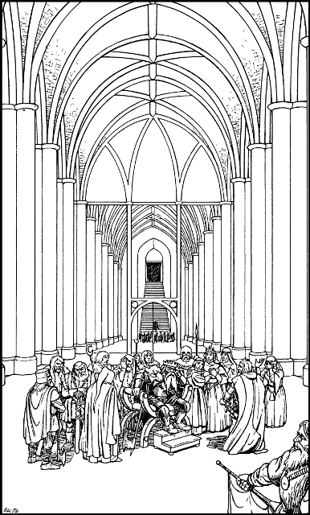

197
The open portal reveals a great stone staircase that descends to a magnificent marble hall. Vast columns brace the sculptured ceiling and tall silvery mirrors line the walls, creating the illusion that this cavernous chamber is even larger. Seated upon a chair in the centre of the echoing hall is King Ryvin, clad in his golden battle-armour and wolfskin cape. Surrounding him are members of his royal family and other high-ranking Drodarin nobility. They are greatly distressed and several are weeping openly. A herald announces your arrival and the crowd parts as you approach the foot of Ryvin’s chair.

‘Praise Ishir!’ booms the dwarf king. ‘We have prayed that you would return to aid us, Lord Rimoah. And I see you bring a Kai champion. We are doubly glad. You’ve arrived not a moment too soon.’
King Ryvin rises from his chair and motions to you and Rimoah to accompany him into an antechamber. In the privacy of this adjoining room, he tells of the nightmare that has engulfed his kingdom following the release of Shom’zaa. The creature and its horde of mutant spawn have spread like a voracious plague throughout the chambers and tunnels of his vast subterranean realm. All contact with the Drodarin communities surrounding Boradon has been severed, the lower levels of the kingdom have been lost to the enemy, and more than half of his army are unaccounted for.
‘So many have been slain,’ he says, his deep voice cracking with emotion. ‘Only the swift destruction of Shom’zaa can save us now. But all is not yet lost. I draw strength from the certain knowledge that my sons—Leomin and Torfan—are still alive, and the Throne of Andarin is intact.’
Suspended upon a chain around his neck is a bloodstone amulet which is divided along its centre. One half of this gemstone glows faintly crimson, the other half pale amber.
‘This is the Andarin Bloodstone,’ he says. ‘It contains the crimson light of Leomin and the amber light of Torfan. These lights will remain aglow so long as my sons shall live.’
Then he points to a flowering shrub that stands in a copper urn beside the chamber door. ‘That Xanthoa is evidence that the throne of my ancestors has not been destroyed, for it would wither in an instant if the throne were sundered. From these signs, and the eternal mercy of Ishir, I draw strength.’
For more than an hour you deliberate how best to defeat Shom’zaa and save the Throne of Andarin, and finally you agree upon a plan of action that could save this beleaguered realm from total destruction.
To continue, turn to 323.